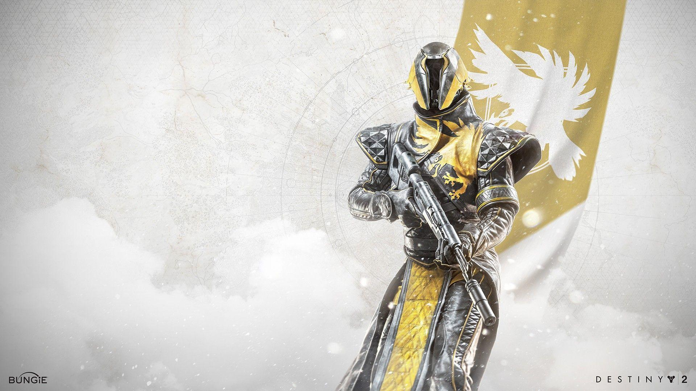

Current Guide:
Current Guide:

Warlocks' Class ability is a stationary rift that they can place at their feet, that either continuouly heals or provides a weapon damage bonus. They excel at mid-range, and their Melee abilities tend to be disjointed projectiles they send in front of them.
Their movement/jump is a glide, which will probably feel incredibly unintuitive at first, but is extremely versatile once you get a hand on it. See [MOVEMENT GUIDE].
Most basic warlock builds tend to focus around grenades, with the most Subclass Aspects that center around Grenades or the Grenade Stat.